The child is astonished on seeing his own image in the
mirror in the hall.
Have you ever had such experiences?
Look at your face on both the sides of a new steel spoon.
What do you see? Record in your science diary your
observations in each of the following situations.
How does the image appear on the rear side of the
spoon?
What about the image on the inner surface of the
spoon?
246
Basic Science VIII
Fig. 18.1
A child observing the
image on the rear side
of the spoon.
Page 87
Figure fig_ch07_p087_01 (Page 87)
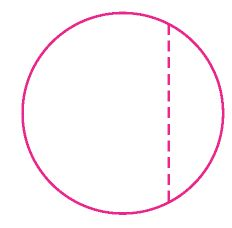
Figure fig_ch07_p087_02 (Page 87)
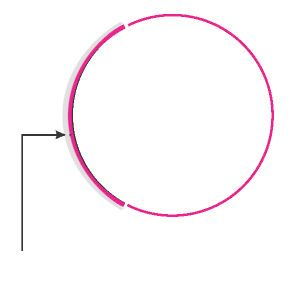
Figure fig_ch07_p087_03 (Page 87)
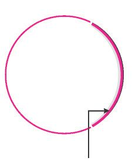
Figure fig_ch07_p087_04 (Page 87)
Write down the special features of the image on the
spoon in relation to the shape of the reflecting
surface.
How do these images differ from that seen on a
plane mirror?
Images are formed not only on plane mirrors but also on
smooth curved surfaces.
Spherical mirrors
Cut off a small portion of a rubber ball as shown in figure
18.2 (a). Make a reflecting surface by affixing a silver
paper on its inner surface as shown in figure 18.2 (b).
Fig. 18.2 (a)
Allow light rays from a torch to fall on this surface.
Are you able to converge the reflected rays of light on
to a wall?
Repeat the experiment by affixing silver paper on the
outer surface of the cut off portion as shown in figure
18.2 (c). Are you able to converge the reflected rays of
light on a wall?
What is the peculiarity of the reflecting surfaces of
these mirrors? Note them down in your science
diary.
Spherical mirrors are mirrors in which the reflecting
surface is a part of the sphere.
silver paper
affixed on the
inner surface
Fig. 18.2 (b)
Concave mirror is a mirror in which the reflecting
surface is curved inwards. Convex mirrors are mirrors
in which the reflecting surfaces are curved outwards.
Let’s familiarise with the technical terms associated with
spherical mirror.
1. Centre of Curvature
Centre of a sphere of which the mirror is a part, is the
centre of curvature of the mirror. In figure 18.3 (a) and
18.3 (b), C indicates the centre of curvature.
Any line drawn from the centre of curvature to the mirror
is normal to the mirror.
silver paper
affixed on the
outer surface.
Fig. 18.2 (c)
Basic Science VIII 247
Page 88
Figure fig_ch07_p088_01 (Page 88)
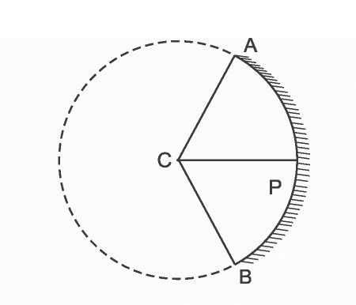
Figure fig_ch07_p088_02 (Page 88)
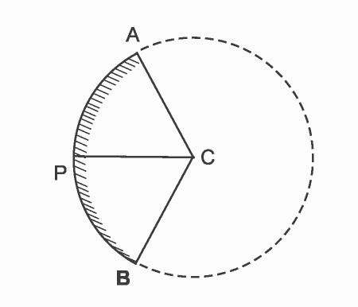
Figure fig_ch07_p088_03 (Page 88)
CP, CA and CB ,which are marked on the figures 18.3 (a) and
18.3(b), are normal to the mirror.
Concave
mirror
Fig. 18.3 (a)
Convex
mirror
Fig. 18.3 (b)
2. Radius of curvature
Radius of curvature (R) of a mirror is the radius of the sphere of
which it is a part.
Distance from the centre of curvature to the reflecting surface of a
mirror is the radius of curvature. In the figures, CP, CA and CB
indicate the radius of curvature.
3. Aperture
Aperture of a mirror is the reflecting surface of the mirror.
4. Pole
Pole of a mirror is the midpoint of the reflecting surface of the
mirror. It is represented as P in the figure.
5. Principal axis
Principal axis of a mirror is the straight line connecting the pole
of the mirror and the centre of curvature of the mirror.
Reflection from a spherical mirror
You have already learned the laws of reflection related to plane
mirrors. Write them down.
Incident ray, reflected ray and the normal at the point of
incidence are in the same plane.
The laws of reflection are applicable to spherical mirrors as well.
Let’s try to understand it through an activity.
Take a concave mirror of known radius of curvature with its
248
Basic Science VIII
Page 89
Figure fig_ch07_p089_01 (Page 89)
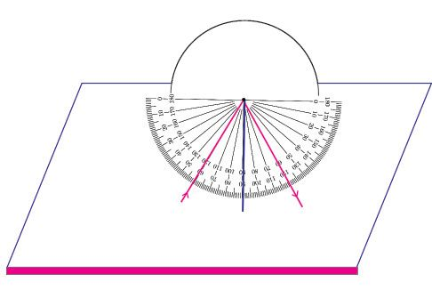
Figure fig_ch07_p089_02 (Page 89)
midpoint marked. Insert half the portion of
the mirror in a cardboard or thermocol sheet
as shown in the figure.
Fix the printout of a protractor in front of the
mirror as shown in the figure. (You can also
draw it using a protractor). Draw the axis to
the midpoint which is already marked and
mark the centre of curvature (C) on it. Now
allow the light ray (AO) from a laser torch to
fall on the mirror at a suitable angle, along
the surface of the thermocol.
O
A
C
B
Fig. 18.4
Draw the path of the reflected ray OB. Find out the angle of
reflection and write it down.
Angle of incidence, i = AOC = .............
Angle of reflection, r = COB
= .............
Repeat the experiment by changing the angles of incidence.
Record in the table the values of angle of incidence and the angle
of reflection in each instance.
Serial
number
Angle of
incidence (i)
1
30o
2
45o
3
60o
Angle of
reflection (r)
Table18.1
Analyse the table and write down your inference in the science
diary.
Repeat the experiment by using a convex mirror and write down
your findings in your science diary.
Angle of incidence and angle of reflection are equal in spherical
mirrors.
Focus and focal length of a spherical mirror
Hold a concave mirror against the sun when there is excess of
sunlight. Hold a paper sheet in front of the mirror and adjust the
distance between them and focus the light on the paper. Don’t
you get a very bright spot on the paper?
Basic Science VIII 249
Page 90
Figure fig_ch07_p090_01 (Page 90)
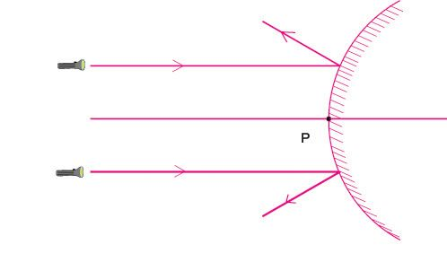
Figure fig_ch07_p090_02 (Page 90)
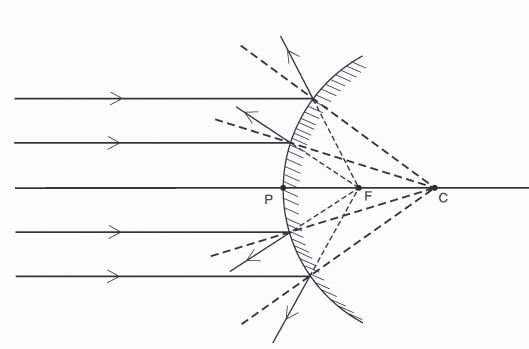
Figure fig_ch07_p090_03 (Page 90)
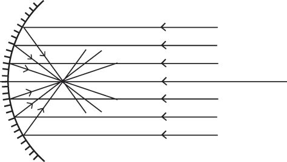
Figure fig_ch07_p090_04 (Page 90)
C
Fig. 18.5
F
P
You might have seen how the light rays focus.
Figure 18.5 shows how the light rays from a
distance fall on a concave mirror and how
they get reflected.
How do the incident rays travel?
What about the path of the reflected rays?
Principal focus of a concave mirror
Rays of light incident on a concave mirror, parallel to the principal axis, passes through
a fixed point on the principal axis after reflection. This point is the principal focus (F) of
the concave mirror.
Let’s find out the principal focus of a convex mirror. Draw a straight line
through the middle of a thick thermocol sheet. Make a small gap in the
sheet in such a way that the gap is perpendicular to the line. Insert half a
portion of a convex mirror into this gap.
Mark the midpoint of the mirror. Make sure that the straight line drawn on
the sheet passes through the midpoint. As shown in the figure 18.5, allow
light rays from two laser torches to fall on the mirror in such a way that
they are parallel to the principal axis and are equidistant from the line.
Draw the path of the reflected rays of light.
What happens to the path of rays after
reflection?
Are the reflected rays converging to a point?
Take the mirror away and trace the path of the
reflected rays backwards. Are they converging
at a point?
Fig. 18.6 (a)
From figures 18.6 (a) and 18.6 (b) try to understand
how the reflection of parallel rays falling on a convex
mirror can be depicted.
Take a look at the principal focus marked F in
figure 18.6 (b).
It is not possible to make the rays of light fall
on a screen by focusing them at the principal
focus of a convex mirror. Hence the principal
focus of a convex mirror is said to be virtual.
But the principal focus of a concave mirror is real.
Write down its reason in your science diary.
250 Basic Science VIII
Fig. 18.6 (b)
Page 91
Figure fig_ch07_p091_01 (Page 91)
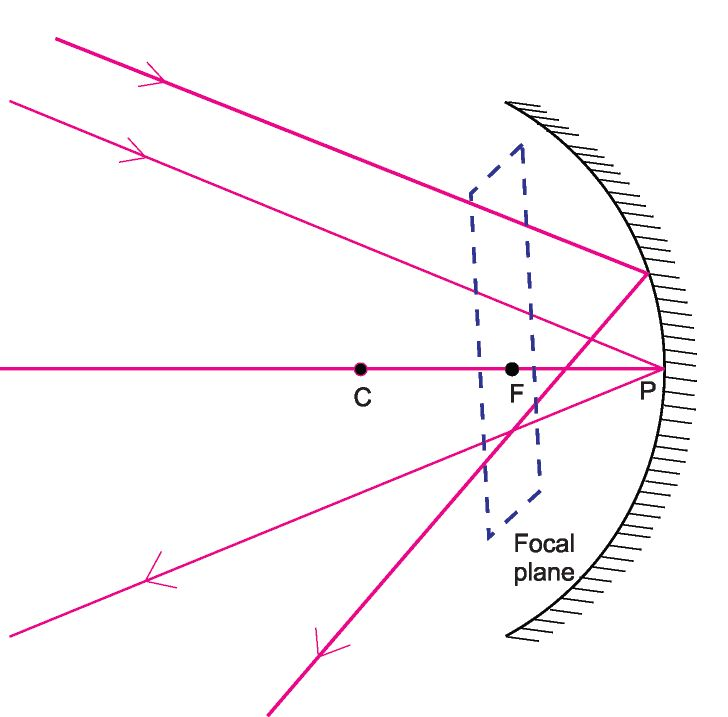
Figure fig_ch07_p091_02 (Page 91)
On the basis of the information you have gathered write
down the differences between principal foci of concave
Rays of light incident on a and convex mirrors and complete the table given below.
Concave
Convex
convex mirror parallel to the
mirror
mirror
principal axis appear to come
from a fixed point on the other
$ Virtual
side of the mirror. This point is
the principal focus of the
$
In front of the mirror
convex mirror.
Principal focus of a
convex mirror
Table18.2
Focal length (f)
Distance from the pole of a mirror to its principal focus
is the focal length. It is indicated using the letter f.
In the figures 18.5 and 18.6 (b) PF indicates the focal
length.
PF = f
The focal length (f) of a spherical mirror is half the radius of
curvature (R) of the mirror.
f=
$
2
The radius of curvature of a spherical mirror is
20 cm. Calculate its focal length.
R = 20 cm
f
$
R
=
R
2
=
20
2
= 10 cm
The focal length of a convex mirror used as rear view
mirror in a bus is 0.6 m. Find its radius of curvature.
Focal plane
Rays of light coming from infinity, making different
angles with the principal axis get focused at different
points. The plane formed by these points is
perpendicular to the principal axis and passes through
the principal focus. This plane is the focal plane.
Fig. 18.7
Basic Science VIII 251
Page 92
Figure fig_ch07_p092_01 (Page 92)
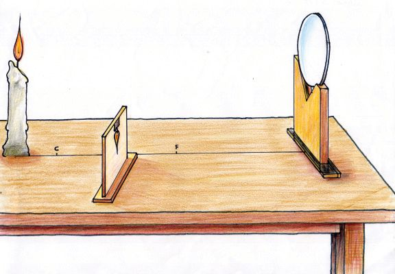
Figure fig_ch07_p092_02 (Page 92)
Images formed by spherical mirrors
Let’s try to understand the position,
nature and size of an image formed by
objects kept at different positions in front
of a concave mirror.
Draw a straight line on a table. At one
end of the line, fix a concave mirror of
known focal length on a stand. Mark the
centre of curvature and the principal
focus on the line. Place a lighted candle
on the principal axis at a small distance
Fig. 18.8
from the centre of curvature. Place a
screen in front of the mirror and adjust
its position so as to get a clear image of the candle on the screen.
On placing the screen in which position in front of the mirror,
do you get a clear image? What is the position of the screen
when a clear image is obtained on it?
Is the image erect or inverted?
Is the image diminished or magnified?
Similarly place the candle at different positions and find out the
position of image, size and features and complete the table 18.3.
Sl.
No.
Position of the object
1
At infinity
2
Beyond C
3
At C
4
Between C and F
5
At F
6
Between F and P
Position of
the image
Features of
the image
Table 18.3
Ray diagrams of spherical mirrors
We can understand the position of image and its features by means
of ray diagrams. For this purpose, we take into consideration only
two rays from among the many rays of light starting from a point
on the object.
252
Basic Science VIII
Page 93
Figure fig_ch07_p093_01 (Page 93)
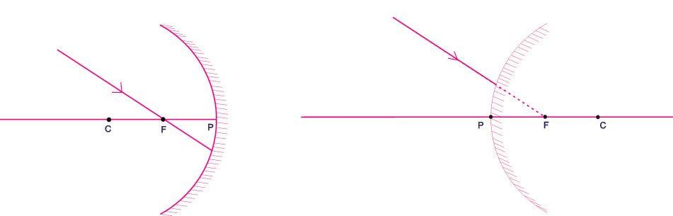
Figure fig_ch07_p093_02 (Page 93)
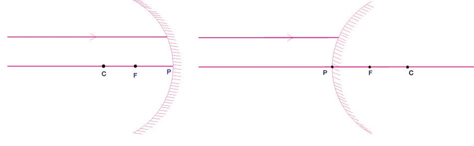
Figure fig_ch07_p093_03 (Page 93)
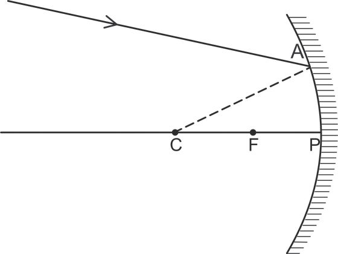
Figure fig_ch07_p093_04 (Page 93)
How do we draw the path of the reflected ray
of light that is incident on a spherical mirror?
Take a look at the figure.
OA is a ray of light incident on a concave
mirror. CA is the normal drawn at A. Draw the
path of the reflected ray of light in accordance
with the law of reflection.
Likewise, we can draw the reflected rays of light
incident at different points of a concave mirror
or a convex mirror, based on the laws of
reflection.
O
Fig. 18.9
Complete the following ray diagrams by
drawing the normal and reflected rays.
Ray of light incident on a mirror and parallel to the principal
axis
Fig. 18.10 (a)
Ray of light incident through the
principal focus of a mirror
Fig. 18.11 (a)
Fig. 18.10 (b)
Ray of light incident on a mirror and
directed to the principal focus
Fig. 18.11 (b)
Basic Science VIII 253
Page 94
Figure fig_ch07_p094_01 (Page 94)
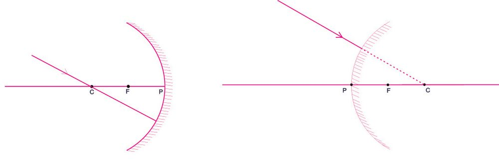
Figure fig_ch07_p094_02 (Page 94)
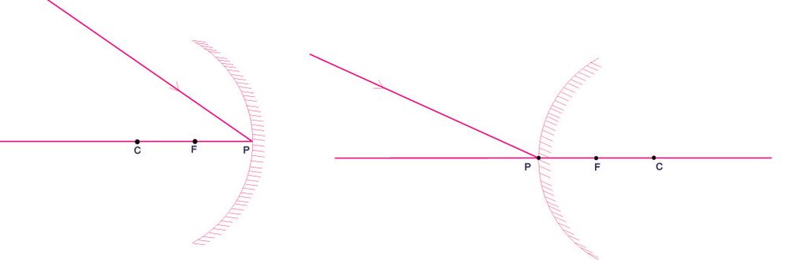
Figure fig_ch07_p094_03 (Page 94)
Ray of light incident through the
centre of curvature of a mirror
Ray of light directed to the centre
of curvature of a mirror
Fig. 18.12 (a)
Fig. 18.12 (b)
Ray of light falling obliquely at the Pole
Fig. 18.13 (a)
Fig. 18.13 (b)
When a ray of light falls obliquely at the pole, the principal axis
itself is the normal. Hence you don’t have to draw another normal.
Record the information gathered through the ray diagrams.
Path of incident ray
Path of reflected ray of light
Concave mirror
Parallel to the principal axis
Through the principal focus/
to the principal focus
Through the centre of curvature/
to the centre of curvature
Incident obliquely at
the pole
254
Basic Science VIII
Table 18.4
Convex mirror
Page 95
Figure fig_ch07_p095_01 (Page 95)
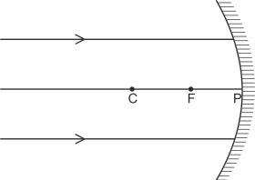
Figure fig_ch07_p095_02 (Page 95)
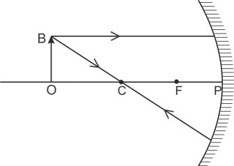
Figure fig_ch07_p095_03 (Page 95)
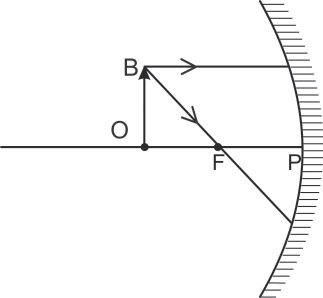
Figure fig_ch07_p095_04 (Page 95)
Ray diagrams of images formed by spherical mirrors
Using ray diagrams, let’s try to describe the position of image
and its features when objects are placed at different positions in
front of a spherical mirror.
For this, we can make use of any two rays of light given below.
Ray of light incident on a mirror parallel to the principal axis.
Ray of light incident on a mirror through the principal focus.
Ray of light incident on a mirror through the centre of
curvature.
Ray of light incident at the pole making a definite angle with
the principal axis.
A. Formation of images in concave mirrors
1.
Object at infinity
Position of image is at F.
Features of image
Real
Inverted
Diminished
Fig. 18.14
You might have found out the position and features of
image formed at the following instances. Complete the
following ray diagrams and note down the position of
images and their features.
2.
Object beyond C
Position of the image is . . . . .
Features of image:
Fig. 18.15
3.
Object at C
Position of the image is . . . . .
Features of the image
C
Fig. 18.16
Basic Science VIII 255
Page 96
Figure fig_ch07_p096_01 (Page 96)
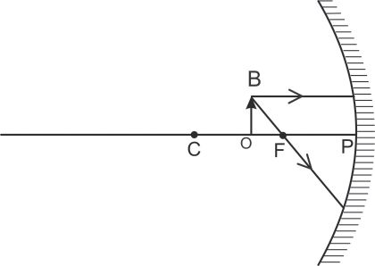
Figure fig_ch07_p096_02 (Page 96)
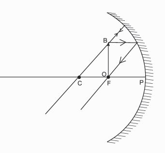
Figure fig_ch07_p096_03 (Page 96)
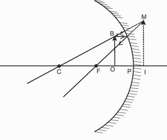
Figure fig_ch07_p096_04 (Page 96)
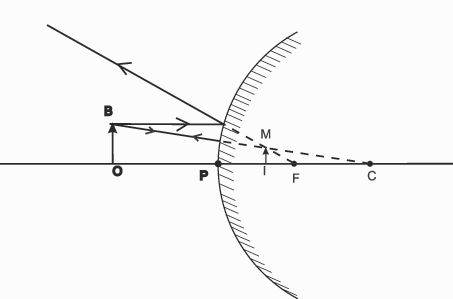
Figure fig_ch07_p096_05 (Page 96)
4.
Object between C and F
Position of the image is . . . . .
Features of the image
Fig. 18.17
5.
Object at F
In the experiment you conducted, did you get an
image on placing the object at F? Take a look at
the figure 18.18. What about the paths of the
reflected rays of light? Record your findings in the
science diary. The reflected rays of light are seen
to go parallel. It is assumed that the image is
formed at infinity.
Fig. 18.18
6.
When object is between F and P
Take a look at the position of image in the
depiction.
Position of the image is . . . . .
Features of the image :
Fig. 18.19
Do convex mirrors also form images like a concave
mirror?
B. Formation of images in a convex mirror
Position of the image is . . . . .
Features of the image
Fig. 18.20
The image formed by a convex mirror is always virtual,
erect and diminished. Whatever may be the position
of the object, the position of image is always between
the pole of the mirror and the principal focus.
You might have understood about the images formed by spherical
mirrors. Arent you convinced that some of them are real and some
are virtual? Discuss the difference between real and virtual images
and complete the table 18.5.
Virtual image
Real image
Table 18.5
You might have understood about the virtual images made by
concave and convex mirrors. Now let us take a look at the
differences between the images.
•
The virtual image made by a concave mirror is always
enlarged.
•
The virtual image made by a convex mirror is always
diminished.
Magnification
Take a look at the figure showing the formation
of image by a concave mirror.
Accurately measure the height of the object,
ho = OB and the height of image hi = IM
height of object, ho = . . . . cm
height of image hi = . . . . cm
KT-487-4/Basic.Sci. 8(E) Vol-2
Can you now calculate the ratio of height of the
image to the height of the object?
H eight of the im age
H eight of the object
=
Fig. 18.22
h
i
h
o
Magnification is the ratio of height of the image to the height of
the object. It is the number that indicates how many times the
size of the object is the size of the image.
h
i
While calculating the magnification, the measurement taken upwards
from the principal axis is considered positive and the measurements
downwards are considered negative. Magnification is a physical
quantity having no unit.
Calculate the magnification if an object of height 3 cm kept in
front of a concave mirror, gives a real image of size 6 cm.
ho = 3 cm
hi
= - 6 cm
h
−6
i
Magnification, m = h = 3 = − 2
o
1.
a)
Observe the figure 18.22 and calculate the magnification.
b) Calculate the height of an object when
it gives an image of height 4 cm when
it is placed at the same place in front
of the mirror.
5 cm
Uses of spherical mirrors
A) Uses of concave mirrors
Used as rear view mirrors by drivers for viewing
vehicles from behind. These mirrors have a wide
field of view compared to that of plane mirrors.
Hence, they can help in avoiding accidents to a
certain extent.
Concave mirrors in
search lights
Concave mirrors or parabolic
mirrors are used in search
lights. The rays of light from a
source of light kept at the
principal focus of a concave
mirror, travel a long distance as
parallel rays after reflection
from the mirror. Search lights
are used for locating persons
who meet with accidents at
night or in natural disasters as
these lights can illuminate
distant objects very well.
Fig. 18.25
Big convex mirrors help in viewing vehicles coming beyond
curves, thus minimising accidents.
Significant learning outcomes
The learner can
explain features of images formed by different types of
spherical mirrors.
engage in experiments by understanding that the laws of
reflection in plane mirrors are applicable to spherical mirrors
as well.
draw ray diagrams by distinguishing the principal foci of
convex and concave mirrors.
solve mathematical problems by understanding the
relationship between radius of curvature and the focal length
of spherical mirrors.
explain the formation of images, position of images and their
features and can engage in related experiments.
Write down the type of mirrors that should be used for getting
the following type of images.
a)
real and magnified
b)
virtual and magnified
c)
virtual and diminished
d) real and diminished
9)
The height of an object kept 12 cm away from a concave mirror
is 1 cm. Calculate the magnification if an image of height 2.5 cm
is formed in front of the mirror.
10) a.
b.
Which type of mirror always give a virtual and erect
image.
Is this image magnified or diminished?
Extended Activities
1.
Find out more situations in which concave and convex mirrors
are made use of and write them down in your science diary.
2.
Understand the change in the position and features of the
image, when an object is moved from infinity to the principal
focus and write them down in your science diary.
3.
Observe the images of objects formed from the same side of
a convex mirror and a plane mirror of the same size.
Understand the differences and write them down in your
science diary.
4.
Using a concave mirror, direct the image of a distant object
on a wall. Observe the image clearly. Then cover half the
portion of the mirror and direct the image again on to the
wall. Try to understand the differences.
5.
Present a paper on situations where spherical mirrors are
used in daily life.